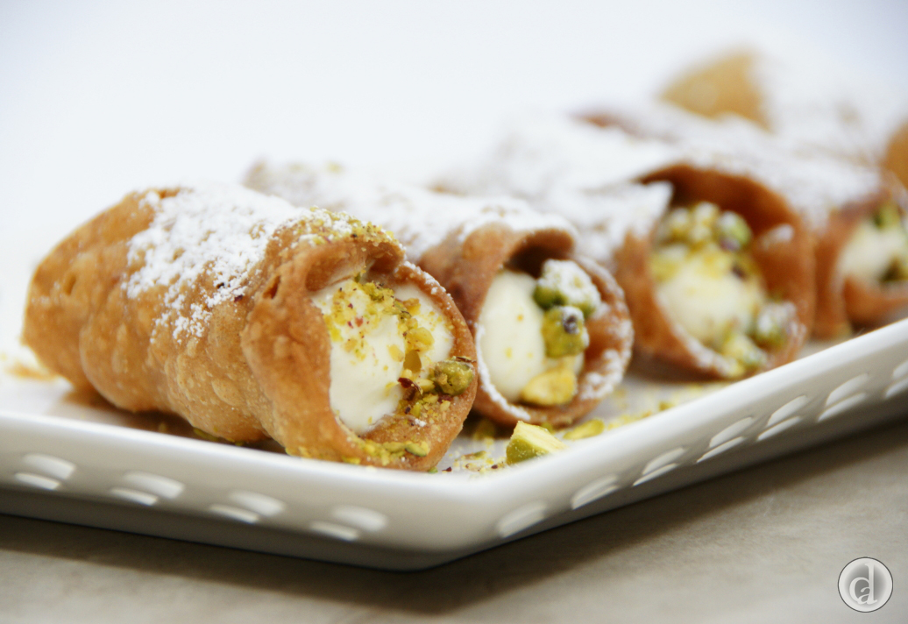

THINGS TO TRY IN TAGAYTAY
● Delicacy in Tagaytay
Also known as biscuit rolls, cookie rolls, cigarette russe, it was Introduced to Filipinos during Spain’s colonization of the country. It’s commonly sold in delicacy stores in Philippine provinces, and IloIlo City is considered as the best producer of the delicacy.